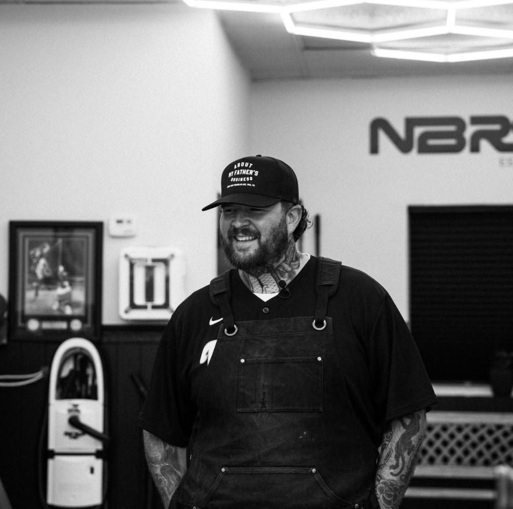

About
The story behind the chair.

You’re welcome to sit on the bench. Not just if you’re getting a haircut. Not just if you have an appointment. Everyone.
Justin Kyle opened Neighbors because he wanted a place that felt like the barbershop he grew up in back in Brooklyn — somewhere kids could stop in, adults could talk, and you didn’t have to spend money to be part of it.
“You don’t have to spend money to be a part of this.”
The shop is for haircuts, fades, beard work, and straight-razor shaves. It’s also for the conversations that happen while you’re in the chair, the kid who needs a water or a snack, and the people who just want to sit outside for a minute.
Justin’s been cutting hair for over 20 years. He spent time at Iron’s Edge in Phoenixville and helped open Unchained in Kimberton before opening Neighbors on Main Street.
The barbers
Justin Kyle
Owner and founder. With over 20 years of experience Justin has seen it all. Any cut, any style. He opened this shop to bring traditional barbering back into the community he lives in.
CJ Bono
After cutting hair for years under some of the best mentors in the area, CJ joined Neighbors full time. He specializes in modern men’s styles and fades.
Rupert
Rupert has owned barbershops in Phoenixville and Green Lane. He brings a modern style to traditional barbering, and he’s skilled in any men’s hairstyle.
Karisa
Karisa guest-spots at the shop. When she’s in, school-age kids’ cuts are free and adult cuts are regular price. Dates go up on Instagram.
From the block
“It’s businesses like Neighbors that help us build more than just Main Street. They help build a stronger sense of community.”
— Mayor Adam Alberico, Spring City